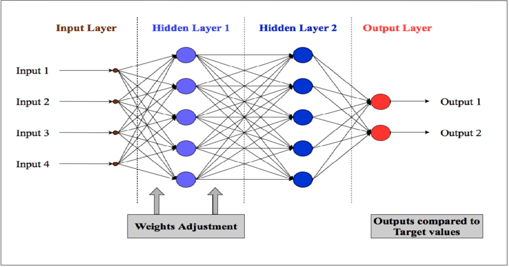
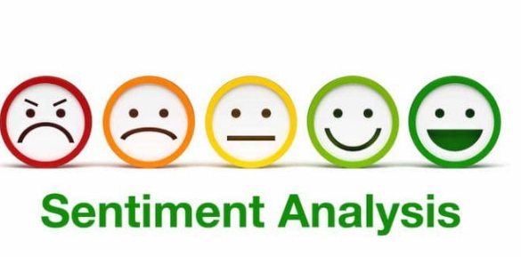

This project utilised Using Classification And Regression Tree (CART) and Neural Network NNW to classify Ebay Auctions as either competetive or not. The selected predictors were Seller Rating, Duration, Closeprice & Openprice. Knowing whether an Acution is competitive or not is important for business decision making for future profitability and understanding the market. Libraries such as caret, neural net, dplyr, and rpart were used among others. The project involved package installations, data loading, data transformation through scaling and normalization, data splitiing, plotting, trainning, prediction and validation. An interesting bit of the project involved comparing the predictive ability of CART and NNW. NNW even though it does not show the used rules, has more predictive ability. Predictor usefulness was tested and open and closed price ranked higher


This project was aimed at predicting the closing prices for the Invesco MSCI Sustainable Future ETF (Fund) based on historical stock data. The project involed data pre-processing, data exploration and analysis, modelling using the different models and comparison of the accuarcy and stability of the models for future prediction use.

The project analyzed the impact of moving a gate in the mobile puzzle game "Cookie Cats" from level 30 to level 40 on player retention using A/B testing. It investigated 1-day and 7-day retention rates for players in both groups. The analysis revealed that both 1-day and 7-day retention rates were slightly lower when the gate was moved to level 40 compared to level 30. Bootstrapping analysis confirmed the significance of the difference, indicating strong evidence that retention is higher when the gate is at level 30. Therefore, the conclusion was drawn that retaining the gate at level 30 would better maintain player retention, crucial for sustained engagement and in-game purchases.

This project utilized regression to predict car sales value using Neural Network (NNW) and Classification and Regression Tree (CART) In R and comparing stability and accuracy of both models. Neural network modelling involved the testing of different layers and nodes. One layer and five nodes was the best since it was the simpler model with almost similar error values with other complex models. If rounded off to the nearest two decimal places, the RMSE for both the 2 layer and 5-layer models were almost equal. In this case therefore going with the less complex model was the best option. In the neural network model, the RMSE data was increasing in the validation data set and reducing in the training data. In essence the neural network model indicates an increase in fit in the training data while indicating high predictive ability in the validation data. This observation was contrary to the observation in the CART regression. In this case, the RMSE was reducing in the validation data. This indicated that the predictive ability was lower in the regression tree.

The aim of this project was to develop a sentiment analysis model using Convolutional Neural Networks (CNN) for text data. Utilizing TensorFlow version 1.13.1, the model was trained and evaluated on sentiment-labeled datasets extracted from S3 storage. The CNN architecture incorporated embedding layers with pre-trained GloVe embeddings, followed by convolutional and pooling layers, ending with dense layers for classification. Through five epochs of training, the model achieved promising results with a test accuracy of approximately 81.27%. Furthermore, the trained model was successfully saved and exported to S3 for future deployment, demonstrating effective integration of machine learning techniques with cloud-based infrastructure.